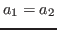
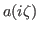
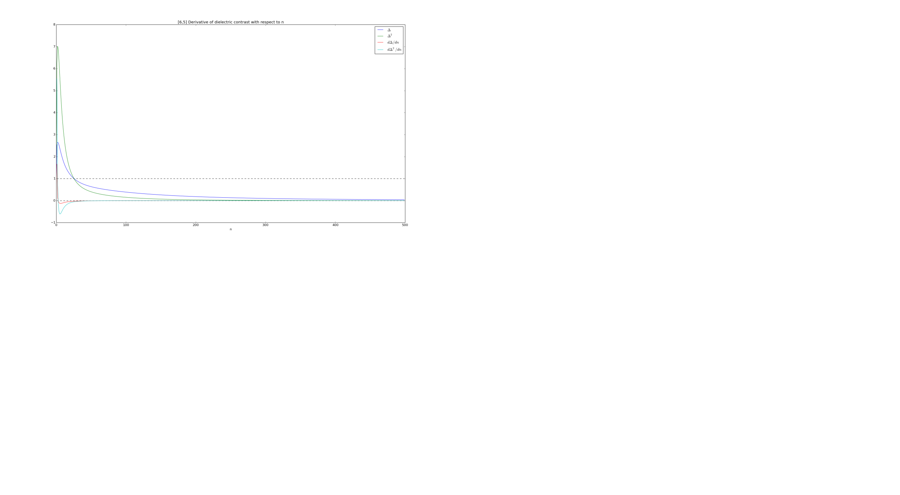
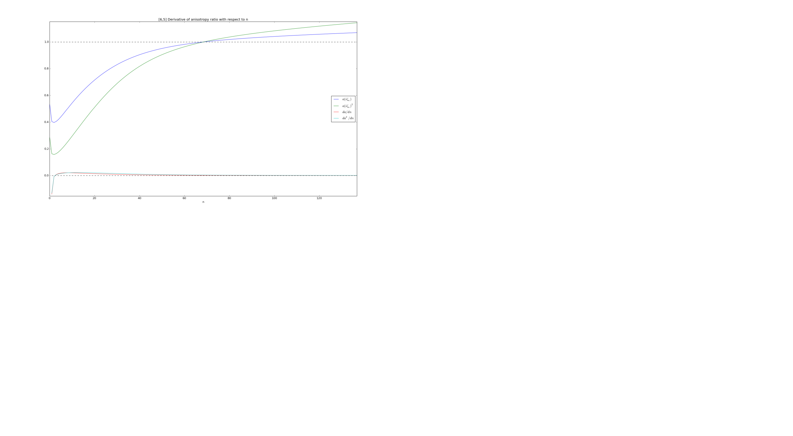

The relative anisotropy compares the dielectric contrasts, , of the
radial and axial responses of the CNTs in water.
For interactions between identical CNTs, we set
.
The ratio of anisotropy measure is given as
where the dielectric contrasts are given by
For the sake of completeness, I have plotted the behaviors of and
 as they appear in the equations for Hamaker Coefficients as well as
their derivatives with respect to n.
Figure 3:
Dielectric contrast of [6,5] CNTs in water, its square, and their
derivatives with respect to n.
|

|
Figure 4:
Anisotropy ratio of [6,5] CNTs in water, its square, and their
derivatives with respect to n.
|

|
Jaime
2014-05-13